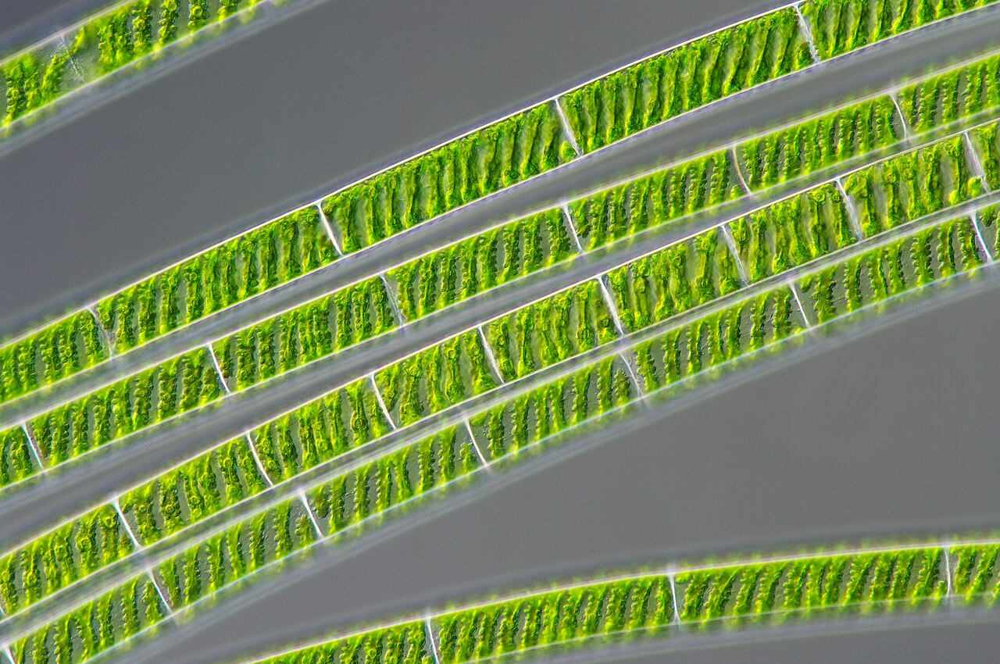
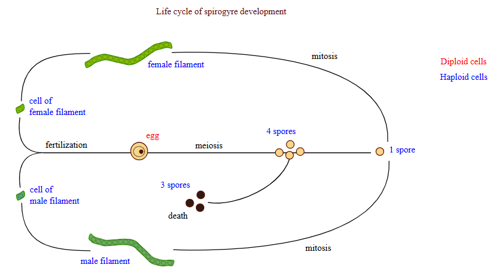
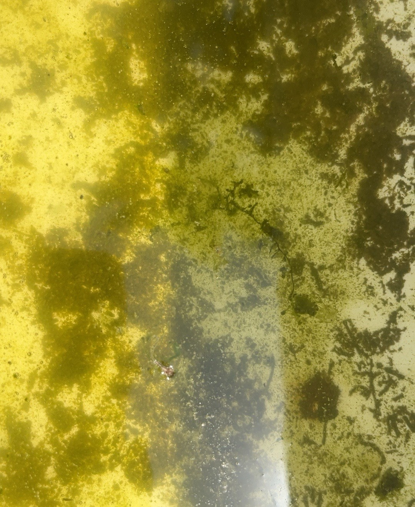
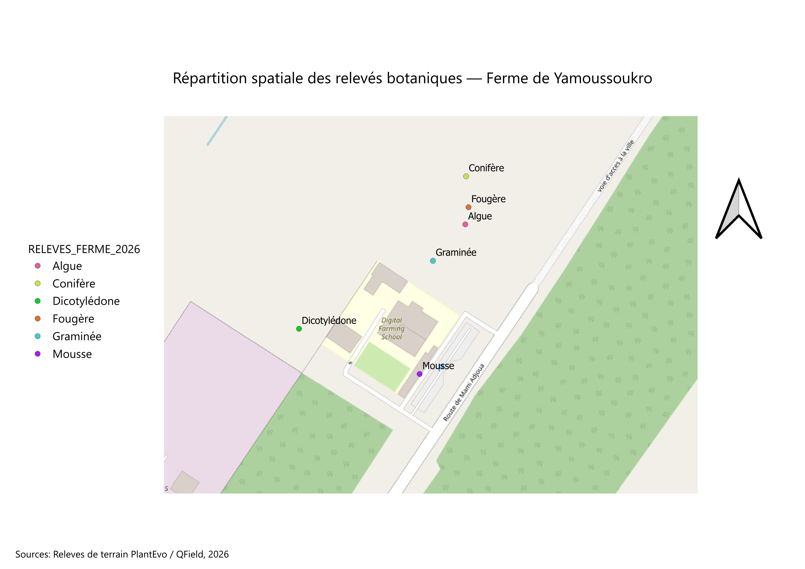

Le problème que ce groupe a résolu
Vivre dans l'eau
Les algues vivent dans l'eau : elles n'ont pas à se protéger du dessèchement. C'est le point de départ de l'histoire des plantes. Seules les algues vertes sont les ancêtres des plantes terrestres.
Thalle
Vie aquatique
Appareil végétatif

Légende à compléter : nom de l'espèce et organe visible.
Chez les algues, le gamète mâle nage jusqu'à l'ovule. Ces plantes restent liées à l'humidité.
Reproduction

Chez les algues, le gamète mâle nage jusqu'à l'ovule. Ces plantes restent liées à l'humidité.
Légende à compléter : schéma du cycle de reproduction.
Observé sur le terrain

Espèce : inconu
GPS : lat, long
Lieu : zone nord
